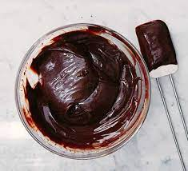

Dark Chocolate Ganache Filling

Bittersweet Dark Chocolate Ganache Filling for Macarons
Our Dark Chocolate Ganache is an emulsion of dark and milk chocolates, heavy cream, honey, and butter. These ingredients are carefully combined at the proper temperature, which results in a smooth and robustly flavoured macaron filling
Ingredients
- 100 pieces Macaron shells chocolate
- 250 g Dark chocolate couverture 58% or similar high quality dark chocolate
- 50 g Milk chocolate couverture 38% or similar high quality milk chocolate
- 250 g Heavy cream, 35% fat
- 20 g Honey
- 45 g Unsalted European-style butter, 82% fat, room temperature
Steps:
- Arrange the macaron shells one row facing up and the next row facing down on a baking tray lined with parchment paper and set aside.
- Combine the heavy cream and honey in a saucepan. Bring to a simmer. Pour it over the chocolate and gently stir.
- Starting with a small rotating circle in the center of the bowl, whisk to blend and homogenize the mixture.
- As more of the mixture comes together into a smoother and slightly thicker consistency, extend the whisk outward into a bigger circle, but still whisking from the center of the bowl. The mixture will incorporate more of the liquids from the sides of the bowl throughout the homogenization process.
- Add the soft butter and blend for about 5 sec using an immersion blender until the mixture is smooth and glossy
- Cover the bowl and allow the ganache to cool for 20-30 min at room temperature. Then refrigerate. Transfer the ganache to a pastry bag and bring to room temperature before piping it onto the macaron shells.
- Assemble macarons